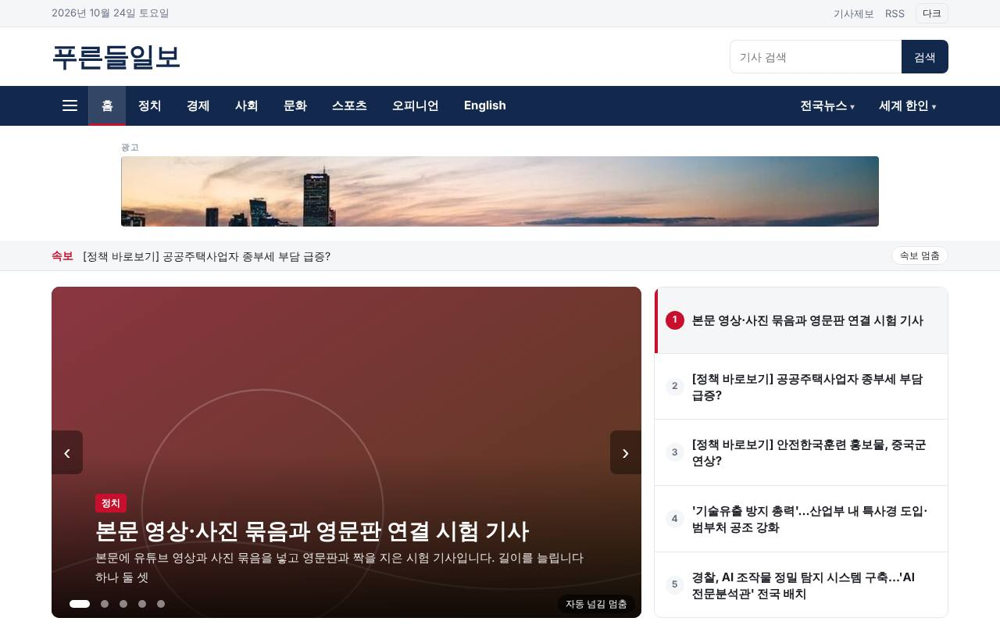
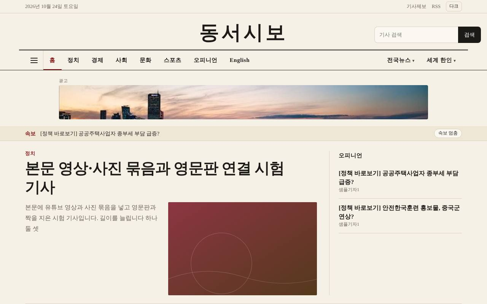
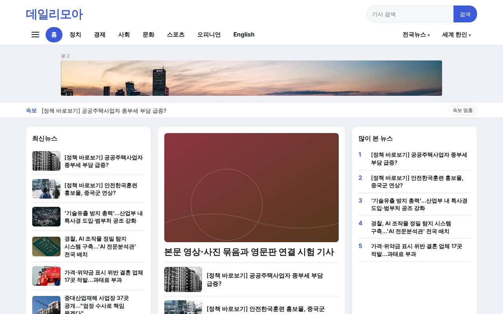
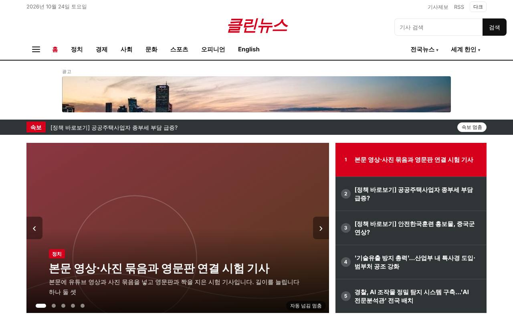
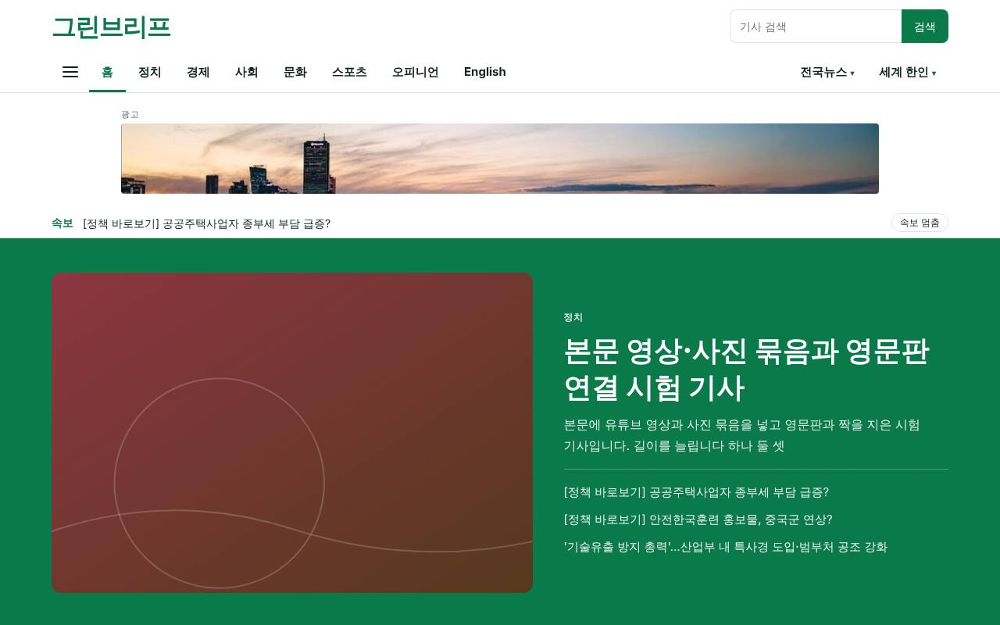
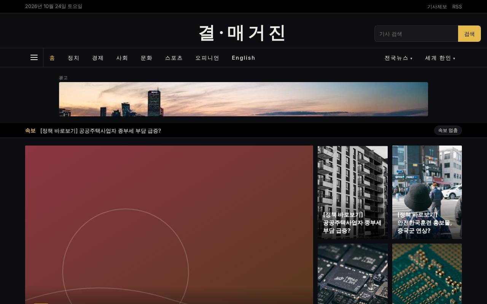
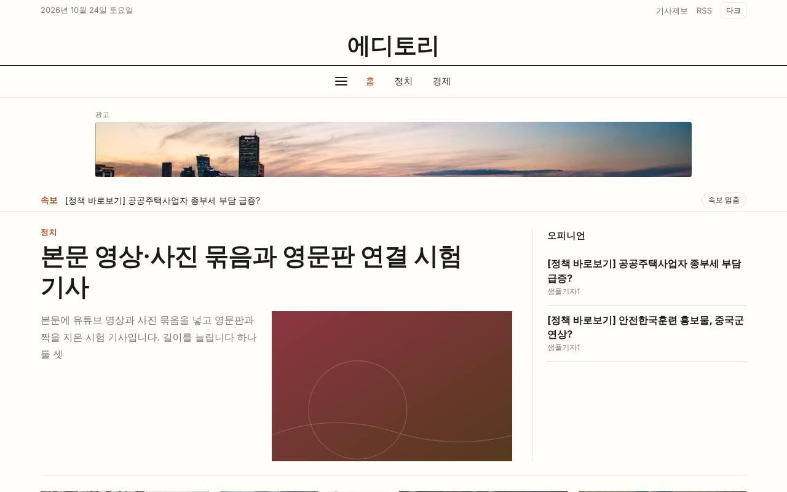
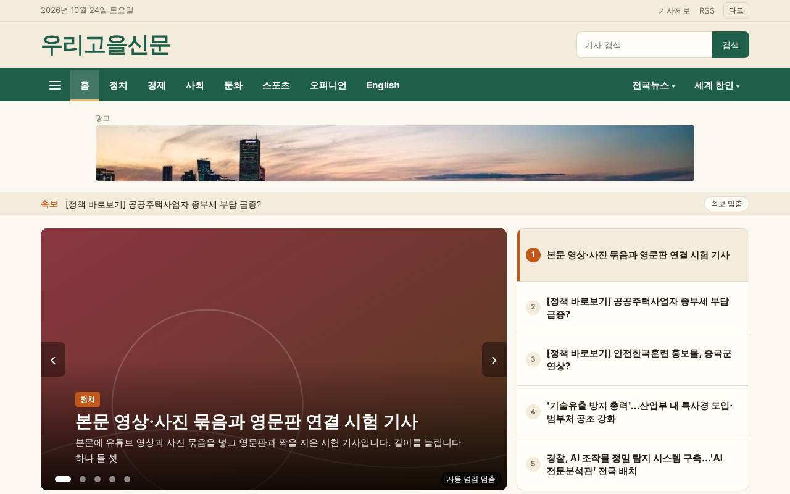
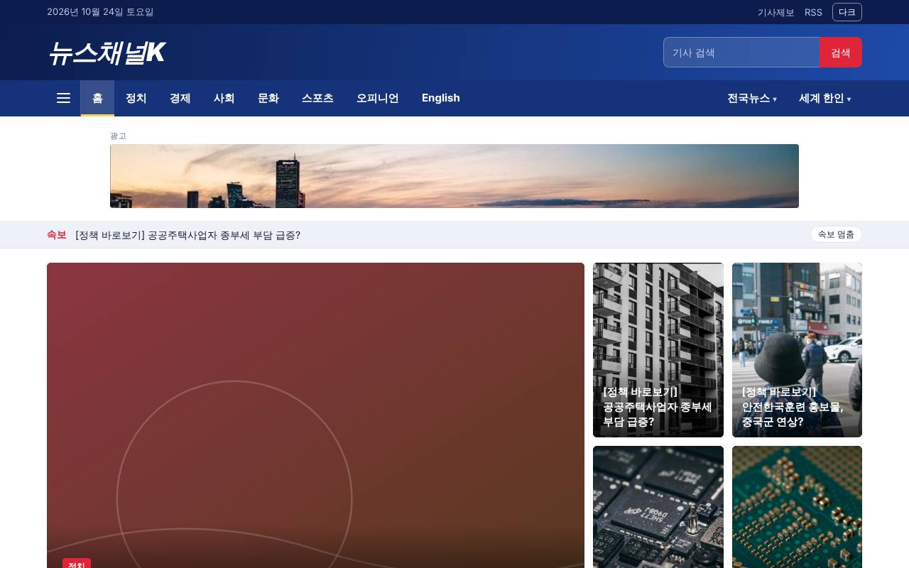
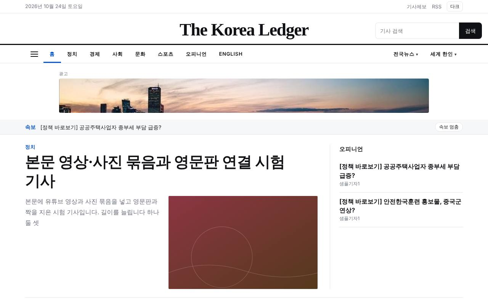

기사 주소와 응답을 바르게
없는 기사와 삭제된 기사에는 정확한 오류 응답을 돌려줍니다. 기사마다 대표 주소(canonical)와 기사 구조화 데이터(NewsArticle)를 넣고, 뉴스 사이트맵·RSS·robots를 자동으로 만듭니다.
디자인
색과 글꼴만이 아니라 머리글 모양과 첫 화면 배치까지 종류마다 다른 10종 중에서 고릅니다. 모든 디자인에 최적의 구조화 데이터를 적용했습니다.
화면을 누르면 큰 창이 열리며 진짜 신문사 사이트처럼 첫 화면과 기사, 분류 화면까지 눌러 볼 수 있습니다. 첫 화면 배치와 머리글, 색, 글꼴이 종류마다 다릅니다. 큰 창에서 PC 화면과 휴대폰 화면을 바꿔 보고, 방향키로 다음 디자인으로 넘길 수 있습니다. 닫기를 누르면 이 목록으로 돌아옵니다.
화면을 누르면 큰 창이 열립니다.

01 / 10기본형 (네이비·레드)가상 제호 푸른들일보네이비 메뉴에 붉은 강조. 슬라이드 머리기사와 오른쪽 제목 목록, 사이드 위젯.크게 열어 눌러 보기
02 / 10종합일간지형가상 제호 동서시보종이색 바탕, 세리프 제호와 이중선. 활자 중심 머리기사 옆에 오피니언 칸.크게 열어 눌러 보기
03 / 10모던 포털형가상 제호 데일리모아회색 바탕에 흰 카드 3단. 최신뉴스·대표 기사·많이 본 뉴스를 한눈에.크게 열어 눌러 보기
04 / 10깔끔 뉴스형가상 제호 클린뉴스흰 바탕에 붉은 이탤릭 제호. 어두운 속보 띠, 가로로 넘기는 포토 띠.크게 열어 눌러 보기
05 / 10웹진 그린형가상 제호 그린브리프초록 전폭 머리기사 띠 아래 FOCUS 카드와 분류 칩.크게 열어 눌러 보기
06 / 10매거진 느와르형가상 제호 결·매거진검은 바탕에 금색 포인트. 큰 사진 모자이크와 번호 붙은 인기 기사.크게 열어 눌러 보기
07 / 10에디토리얼 미니멀형가상 제호 에디토리여백과 글자 중심. 한 단 읽기 폭, 최소한의 메뉴.크게 열어 눌러 보기
08 / 10지역신문형가상 제호 우리고을신문초록 메뉴띠와 따뜻한 종이색. 왼쪽 단에 지역 소식과 많이 본 뉴스.크게 열어 눌러 보기
09 / 10방송·영상형가상 제호 뉴스채널K남색 그라데이션 머리글, 재생 표시가 붙은 가로 영상 띠.크게 열어 눌러 보기
10 / 10영문 글로벌형가상 제호 The Korea Ledger영문 신문 제호, 대문자 메뉴, 세리프 머리기사.크게 열어 눌러 보기정책브리핑의 공개 기사(공공누리 제1유형, 출처 표시)와 무료로 쓸 수 있는 실제 사진(Pexels)으로 채운 시험 화면입니다(제호는 가상). 사진은 기사와 직접 관계없는 자료사진입니다. 저장된 화면이라 검색·입력은 동작하지 않습니다.
없는 기사와 삭제된 기사에는 정확한 오류 응답을 돌려줍니다. 기사마다 대표 주소(canonical)와 기사 구조화 데이터(NewsArticle)를 넣고, 뉴스 사이트맵·RSS·robots를 자동으로 만듭니다.
휴대폰 두 가지 크기(360·390폭)에서 가로로 넘치는 곳이 없는지, 누르기 어려운 링크가 없는지 점검했습니다. 느린 모바일 환경을 가정한 자체 측정에서 주요 화면은 1초대에 떴습니다. 실제 사진과 광고가 붙으면 수치가 달라질 수 있어 이전할 때 다시 측정합니다.
새 CMS도 같은 점검 엔진으로 봅니다. 옮기기 전 사이트의 상태를 기록해 두고, 옮긴 뒤 같은 항목으로 다시 봅니다. 이후 지속 관제로 이어갈 수 있습니다(지속 관제는 제공 전 단계).
고른 디자인에 신문사의 색과 로고, 매체명을 입힙니다. 세부 조정 범위는 상담에서 정합니다.
상담 때 고른 디자인으로 견적과 일정을 말씀드립니다.